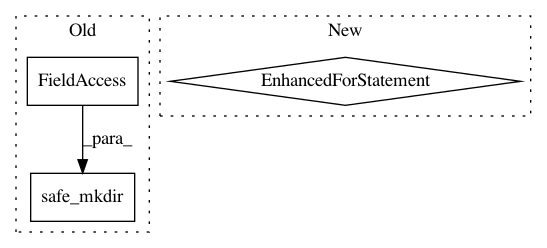

b2202480258b6f2f5f4e020e86cde975088c7792,src/python/pants/backend/jvm/tasks/jar_create.py,JarCreate,execute,#JarCreate#,70
Before Change
self._jars = {}
def execute(self):
safe_mkdir(self.workdir)
with self.context.new_workunit(name="jar-create", labels=[WorkUnit.MULTITOOL]):
for target in self.context.targets(is_jvm_library):
jar_name = jarname(target)
After Change
with self.context.new_workunit(name="jar-create", labels=[WorkUnit.MULTITOOL]):
jar_mapping = self.context.products.get("jars")
for vt in invalidation_check.all_vts:
jar_name = vt.target.name + ".jar"
jar_path = os.path.join(vt.results_dir, jar_name)
def add_jar_to_products():
jar_mapping.add(vt.target, vt.results_dir).append(jar_name)
if vt.valid:
if os.path.exists(jar_path):
add_jar_to_products()
else:
with self.create_jar(vt.target, jar_path) as jarfile:
with self.create_jar_builder(jarfile) as jar_builder:
if vt.target in jar_builder.add_target(vt.target):
add_jar_to_products()
@contextmanager
def create_jar(self, target, path):
existing = self._jars.setdefault(path, target)
if target != existing:
In pattern: SUPERPATTERN
Frequency: 3
Non-data size: 3
Instances
Project Name: pantsbuild/pants
Commit Name: b2202480258b6f2f5f4e020e86cde975088c7792
Time: 2015-07-11
Author: codyhgibb@gmail.com
File Name: src/python/pants/backend/jvm/tasks/jar_create.py
Class Name: JarCreate
Method Name: execute
Project Name: pantsbuild/pants
Commit Name: 5e6868b272957c21483d0a0a39d88f1b29d80d94
Time: 2014-04-23
Author: zundel@squareup.com
File Name: src/python/pants/tasks/protobuf_gen.py
Class Name: ProtobufGen
Method Name: genlang
Project Name: pantsbuild/pants
Commit Name: 136206c62ff375644ac5f0b76f619d049ecd34e0
Time: 2016-01-08
Author: wangpeiyu@gmail.com
File Name: src/python/pants/backend/jvm/tasks/bundle_create.py
Class Name: BundleCreate
Method Name: consolidate_classpath